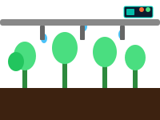
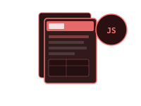
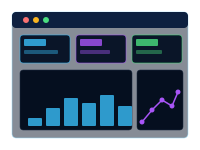
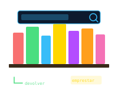
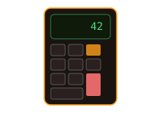

PHP · Java · Kotlin · Vue · Laravel · IoT
Desenvolvedor Fullstack especializado em CME, CMMS e automação inteligente. Transformando hardware e software em soluções reais — do microcontrolador ao painel web.
Sou Leonardo Maciel, desenvolvedor Fullstack com mais de 1 ano e meio de experiência, baseado em Marechal Cândido Rondon — PR.
Minha especialidade é desenvolver soluções e melhorias para as áreas de CME e CMMS — sistemas que fazem a diferença real em ambientes hospitalares e industriais.
Além do trabalho, tenho projetos próprios com IoT e Inteligência das Coisas: do microcontrolador ao painel de controle web, da eletrônica ao banco de dados.
Nativo em Português, com inglês técnico em desenvolvimento para documentação e comunicação internacional.





Aberto a oportunidades, colaborações em IoT, automação, CME/CMMS ou qualquer desafio fullstack interessante. Manda uma mensagem!
Este projeto foi desenvolvido para uso interno e o código-fonte não está disponível publicamente por questões de
confidencialidade contratual.
Quer saber mais sobre como foi construído? Entre em contato!
Este repositório existe mas está configurado como privado no GitHub. O projeto pode ser apresentado pessoalmente ou detalhado por contato direto.